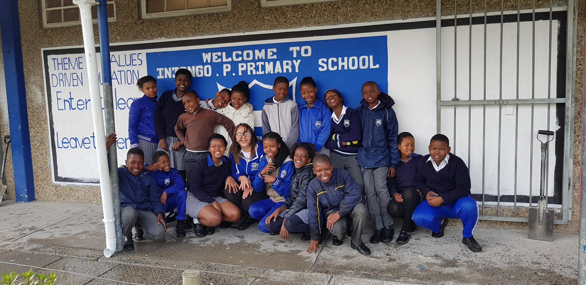

Welcome to Injongo Primary School
At Injongo Primary School, we are a vibrant and inclusive community dedicated to providing a world-class education that prepares our students for success in all aspects of life. Since our founding in 1987, we have been committed to excellence in academics, arts, and character development.
Our school has a rich history of achievement, and we are proud to be a multi-award-winning school in choir, with numerous regional and national championships to our name. Our students have performed at prestigious events and venues, showcasing their talent and dedication to the arts.
But our success goes beyond our achievements in the choir room. We are a community that values creativity, critical thinking, and collaboration. Our experienced and dedicated teachers, staff, and leadership team work tirelessly to create engaging and challenging learning experiences that meet the diverse needs of our students.
Our mission is to empower our students to become compassionate, creative, and critical thinkers, prepared to succeed and make a positive impact in an ever-changing world. We strive to create a nurturing and inclusive environment that fosters a love of learning, respect for others, and a sense of social responsibility.
At Injongo Primary School, we believe that every child deserves a high-quality education that prepares them for success in all aspects of life. We are committed to providing a well-rounded education that includes academics, arts, sport, and character development. Our goal is to help our students become confident, capable, and compassionate individuals who are prepared to make a positive impact in the world.